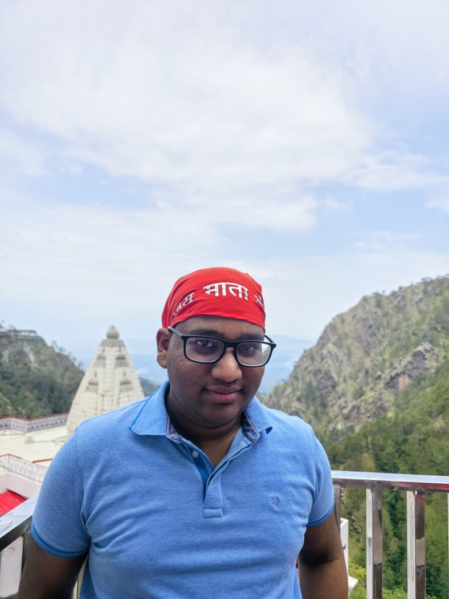

I am a first-year Computational Humanities student at IIIT Hyderabad. My work focuses on Systems, Programming and Machine Learning, with a particular interest in the mathematical foundations of Linear Algebra, Graph Theory, and Game Theory. I enjoy problem-solving and am a competitive programmer; my main preference is to break and build stuff.
My other interests include delving into economic systems (like the petrodollar), debating philosophy, reading books, solving puzzles, origami, combinatorics, swimming, and badminton.
Born on 11 - March - 2008.
Participated in an interschool debate and came 2nd.
Obtained SOF zonal gold medals in maths and science.
Participated in Indian National Maths Olympiad in grade 11 and developed interest in Problem Solving.
Joined the Computational Humanities Programme at IIITH through UGEE in july, 2025.
Built a purely C 2-player + Computer-vs-Player Tic-Tac-Toe using built-in FSM brute-forcing to prevent victory in any case.
Ran a data analysis on the agrarian income data for a Karnataka sample dataset.
Take a look at the projects I have worked on here
Interested in a project or want to discuss a topic? Contact me here →
